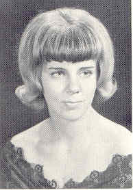
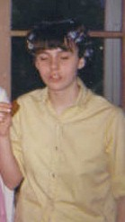
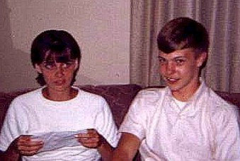
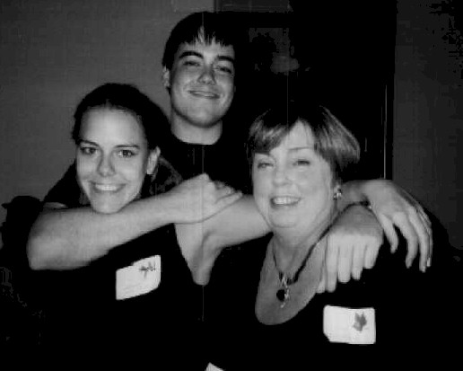
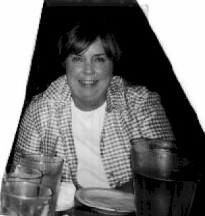

|  1967 In Memory(Obituary) |
|
|  1964 |
 1967 - Linda & Tom Jensen |
|  2002 |
 2002 |
But enough about me..... Let's talk about us and our generation - the baby boomers,
the hip generation. To me, the significant generation:
We changed the world with respect to how Americans thought about:
War
Peace
Parenting
Marriage
Divorce
Religion
Politics
Music
Ethics
Our parents, The Greatest Generation, according to Tom Brokaw, and virtually all the
generations before them back to the Revolutionary War, pretty much believed and
thought as their parents. We, on the other hand, turned things around and I think most
of our parents would say they learned from us, too. Certainly, we were the first
generation whose kids listened to the same music we did - Rock and Roll is here to
stay - it and Mick Jagger will never die.
We have witnessed great changes since graduating from high school:
Man on the Moon
Personal Computers
The Internet
E-mail
Cloning
September 11, 2001
That last one, that day, reminded us that with all the changes we witnessed or created,
all that really, really, matters is home, family, and friends. And so, it is with
great anticipation that I look forward to going back to my hometown, Boone, Iowa, to
see my friends and to have the comfort of knowing:
you are as old as I am!
See ya, Linda Ward Rickertsen